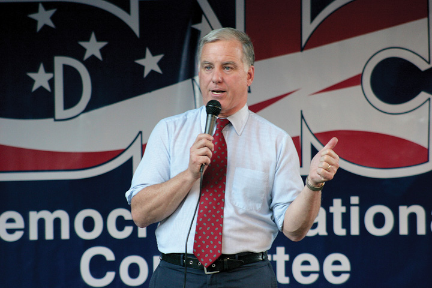

After reading this section, you should be able to answer the following questions:
Republican president George W. Bush ran for reelection against Democratic candidate Senator John Kerry (MA) and won. The campaign hinged on the candidates’ performance in battleground states where the race was close. Terrorism and the war in Iraq were key campaign issues.
Figure 11.11 Howard Dean Speaking at a DNC Event
The candidacy of Governor Howard Dean, who was vying for the Democratic presidential nomination in 2004, was derailed after a video of the scream he let out when addressing his supporters at the Iowa caucuses ignited an unfavorable media blitz.
Source: Photo courtesy of Matt Wright, http://commons.wikimedia.org/wiki/File:HowardDeanDNC.jpg.
In 2003, Governor Howard Dean (VT) was the Democratic presidential candidate most vociferously opposing the Iraq War. His stance and forceful rhetoric gave his campaign unprecedented success in obtaining funds and volunteers through the web.Zephyr Teachout and Thomas Streeter, eds., Mousepads, Shoe Leather, and Hope (Boulder, CO: Paradigm, 2008). This accomplishment surprised the news media, generated reams of favorable coverage for him, helped him to raise funds, and transformed him from a marginal candidate to the front runner—all before a single vote was cast. But in the Iowa caucus, Governor Dean came in third behind Senators John Kerry of Massachusetts and John Edwards of North Carolina. That night, shouting over the din of his supporters, he committed to continuing his campaign and then let out a loud scream. The networks and cable news replayed the visual and shout, now described as “the scream heard around the political world,” hundreds of times, but without the loud audience noise over which he was attempting to be heard. He seemed a bit unbalanced and certainly not presidential. Parodies of “the scream” proliferated online.
Howard Dean’s Scream
(click to see video)The media endlessly replayed Democrat Howard Dean’s scream after the Iowa caucuses in 2004.
After the Iowa caucuses the news media reported that Senator Kerry was likely to be nominated. Dean received less coverage than before, most of it negative. His support shrank by 50 percent in the polls, while Kerry’s popularity in the polls grew. Kerry won New Hampshire and other primaries, locking up the nomination on Super Tuesday, March 2.
The theme of the Democratic convention and John Kerry’s acceptance speech centered on Kerry’s status as a Vietnam war hero with the strength and determination to be president, commander in chief, and to wage the war on terrorism. Missing from the convention were a vision and program for the future of the country. There were few attacks on President George W. Bush or his record. For these reasons, Kerry did not experience much of a postconvention bounce.
The Republicans renominated the incumbents, President George W. Bush and Vice President Dick Cheney, who were unchallenged in their party’s caucuses and primaries. Their convention was held in New York City around the anniversary of the 9/11 terrorist attack on the World Trade Center and within staging distance of the ground zero site. The convention portrayed President Bush as a strong and decisive leader. Convention speakers attacked Kerry as weak, a waffler, and unqualified to be president. In his acceptance speech, President Bush laid out programs and policies he would pursue if reelected, which included security and defense in order to ensure that America “is safer.” In polls, his postconvention bounce ranged from 4 to 11 percent.
The Iraq War was an issue that posed problems for both candidates. For Bush, it was the continued insurgency against the US occupation and the failure to find weapons of mass destruction. He tried to finesse this by equating the war in Iraq with the war on terrorism. Kerry offered few alternatives to existing policy. He compounded his problem by saying in a speech at Marshall University about his vote for funding the war, “I actually did vote for the $87 billion before I voted against it.” This statement, at best confusing, at worst contradictory, was a major news story the next day and was pounced on by the Bush camp.
The Republicans had a wedge issue in same-sex marriage. For many months this subject had been prominent in the news. Eleven states had propositions on their ballots amending their constitutions to limit marriage to one man and one woman. An ad supporting this position used the sound of wedding bells to remind people that the amendment would protect traditional marriage. The issue primed people’s vote when evaluating the presidential candidates, attracting some Democratic voters to choose the Republican candidate. Nine of the eleven states went for President Bush.
Campaigning focused on eighteen battleground statesStates that are highly contested where either candidate could win in a presidential election. that either candidate could win, a number reduced as Election Day neared to Florida, Iowa, Ohio, and Wisconsin.For the campaign from the consultants’ perspectives, see Kathleen Hall Jamieson, ed., Electing the President, 2004: The Insider’s View (Philadelphia: University of Pennsylvania Press, 2005). Candidates used their ads strategically in these states. Bush’s ads were more memorable and effective than Kerry’s. One “documents” Kerry’s supposed flip-flops by editing scenes of the senator wind surfing so that he goes one way then another to the accompaniment of Strauss’s “Blue Danube” waltz, while the voice-over states his different (contradictory) positions. The ad ends with this voice-over: “John Kerry: Whichever way the wind blows.”
Figure 11.12 John Kerry Windsurfing in Nantucket

The image of Democratic candidate John Kerry windsurfing off Nantucket, Massachusetts, was featured in an ad by his opponent, Republican George W. Bush, as well as in major news stories and blog posts.
Source: Used with permission from AP Photo/Gerald Herbert.
The most damaging ads attacking Kerry were made by Swift Boat Veterans for Truth. As a 527 organization, they relieved the Bush campaign of any responsibility for the ads and from having to justify or defend them. The first Swift Boat adAn ad produced by the Swift Boat Veterans for Truth, challenging Democratic presidential candidate John Kerry’s Vietnam War record, that aired during the 2004 election. opens with Kerry’s running mate, Senator John Edwards (NC), saying that the best way to understand Kerry is to “spend three minutes with the men who served with him.” The ad spliced together short interviews with veterans who accused Kerry of lying about his Vietnam War record and betraying his comrades by later opposing the war. The ad appeared in only a few states, but its incendiary charges dominated election-news coverage where the ad was shown repeatedly. Senator Kerry’s campaign waited two weeks before showing an ad responding to the accusations. In that time, the attack stuck, casting doubts about Kerry’s heroism, integrity, and fitness to lead the fight against terrorism.
Kerry revived his election prospects through his performance in televised presidential debates. Polls showed that Kerry won the first debate, as he appeared presidential and seemed to be more certain than his opponent in answering the questions. However, President Bush improved in the two subsequent debates. People do not necessarily equate winning a debate with deserving their vote.
In 2004, the news media overwhelmingly emphasized the horse race. Only 18 percent of the stories on network news discussed candidates’ stands on policy issues, their qualifications, or previous records.Content analysis provided by Media Tenor. Two events given prominent media coverage benefited the president: Chechen terrorists killed teachers and children in a school-hostage massacre in Beslan, Russia, and Osama bin Laden released a videotaped statement the weekend before the election. These events made the Republicans’ issue of the terrorism threat resonate with voters.
President Bush won the Electoral College 286 to 252. He gained 50.7 percent of the popular vote compared to 48.3 percent for John Kerry. Bush held all the states he had won in 2000 except for New Hampshire, and he picked up Iowa and New Mexico. The key state was Ohio with twenty electoral votes, which President Bush won with 51 percent of the vote.
Party Voting in Presidential Elections by State
Maps depicting presidential-election voting by party from 1960 to 2008, produced by Robert Vanderbei, of Princeton University can be found at http://www.princeton.edu/~rvdb/JAVA/election2004.
Republican president George W. Bush was reelected in the 2004 presidential election against Democratic candidate John Kerry. Media coverage focused on the horse race between the candidates, especially in battleground states where the race was tight. Kerry faced opposition from a 527 organization, Swift Boat Veterans for Truth, which ran ads that cast aspersions on Kerry’s service in the Vietnam War.